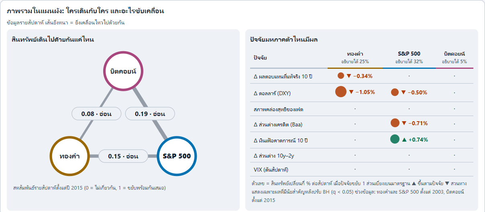
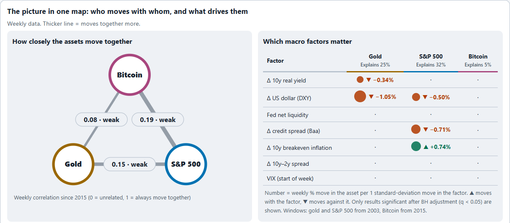

Eco-project: ทองคำ, S&P 500, BitcoinEco-project: gold, S&P 500, Bitcoin
สามสินทรัพย์นี้สัมพันธ์กันแค่ไหน ปัจจัยมหภาคตัวไหนมีผล และพยากรณ์เป็นช่วงได้ดีกว่า random walk ไหม คำตอบคือสัมพันธ์กันน้อย และพยากรณ์ได้ดีกว่าเฉพาะ S&P 500 ในเรื่องความกว้างของช่วง ไม่ใช่ทิศทาง
How closely do these three assets move together, which macro factors matter, and can range forecasts beat a random walk? They are only weakly related, and only the S&P 500 forecast beats a random walk, on the width of its range rather than its direction.
- บทบาทRole
- โปรเจกต์ส่วนตัว ตั้งแต่ดึงข้อมูล วิเคราะห์ พยากรณ์ ไปจนถึง dashboard สองภาษาPersonal project, from data collection and analysis to forecasts and a bilingual dashboard
- ข้อมูลData
- 50 series จาก FRED และ 13 tickers จาก Yahoo Finance ข้อมูลถึง 2026-10-2350 FRED series and 13 Yahoo Finance tickers, data to 2026-10-23
- เครื่องมือTools
- Python, pandas, statsmodels, arch (GJR-GARCH), Plotly
- ผลResult
- S&P 500: qualified, ทองและ BTC: none (ใช้ random walk)S&P 500: qualified, gold and BTC: none (random walk shipped)
โจทย์Problem
ถ้าถือทองคำ หุ้นสหรัฐ และ Bitcoin ไว้ด้วยกัน คำถามที่ตามมาคือสามอย่างนี้เคลื่อนไหวไปด้วยกันไหม ปัจจัยเศรษฐกิจตัวไหนขับเคลื่อน และถ้าจะพยากรณ์ล่วงหน้า 1 ถึง 12 เดือน เราพูดได้มากแค่ไหนโดยไม่เกินกว่าที่ข้อมูลรองรับ
Holding gold, US equities and Bitcoin together raises three questions: do they move together, which economic factors drive them, and when forecasting 1 to 12 months ahead, how much can honestly be said beyond what the data supports?
วิธีทำProcess
แก้ปัญหาข้อมูลก่อนวิเคราะห์Fixing the data before analysis
- ตัวเลขมหภาครายเดือนเลื่อนไปวันที่ประกาศจริง ไม่ใช่วันของงวดข้อมูล เพื่อกัน look-ahead
- คำนวณ return เฉพาะวันทำการของ NYSE เพราะการ forward-fill วันหยุดทำให้เกิด return เป็นศูนย์ปลอม
- ใช้ log return และวิเคราะห์ BTC หลักตั้งแต่ปี 2015 เพราะช่วง 2010-2014 ราคาต่ำมากและซื้อขายบาง ส่วนน้ำมันใช้ Brent เพราะ WTI ติดลบในวันที่ 2020-04-20
- เทียบความสัมพันธ์ด้วย return ไม่ใช่ระดับราคา เพราะ correlation ของระดับราคาเป็น spurious
- Monthly macro figures were shifted to their approximate release dates instead of their reference period, to prevent look-ahead.
- Returns use NYSE business days only, since forward-filled holidays create fake zero returns.
- Log returns throughout. The main BTC window starts in 2015 because 2010-2014 prices were tiny and illiquid. Oil uses Brent because WTI went negative on 2020-04-20.
- Relationships use returns, not price levels, because level-on-level correlation is spurious.
กติกาเลือกโมเดลพยากรณ์Forecast model selection rule
- พยากรณ์เป็นช่วง P5 ถึง P95 ที่ 1, 3, 6 และ 12 เดือน ทดสอบย้อนหลังแบบ walk-forward เทียบกับ random walk
- โมเดลทางเลือกจะแทน random walk ได้ต้องมี CRPS ต่ำกว่า reference ที่กำหนดทุกตัว ด้วย Diebold-Mariano แบบสองทางที่ p < 0.0077 (Bonferroni 0.10/13 สำหรับ 13 โมเดลทางเลือก) ทั้งช่วงเต็มและช่วงตั้งแต่ปี 2015 และช่วง 90% ต้องครอบคลุมจริงระหว่าง 0.80 ถึง 0.97
- ถ้าไม่มีโมเดลไหนผ่าน ให้ใช้ random walk ที่ปรับตาม volatility
- Forecasts are P5 to P95 ranges at 1, 3, 6 and 12 months, backtested walk-forward against a random walk.
- A candidate replaces the random walk only if it beats every required reference on CRPS with a two-sided Diebold-Mariano p < 0.0077 (Bonferroni 0.10/13 over 13 candidates), on both the full window and origins from 2015, with 90% coverage between 0.80 and 0.97.
- If no candidate passes, a volatility-calibrated random walk ships.
สิ่งที่ส่งมอบSolution
dashboard เป็นไฟล์ HTML ไฟล์เดียว ใช้ Plotly และฝังข้อมูลทั้งหมดไว้ เปิดได้แบบ offline ไม่มี network request มีภาษาไทยเป็นค่าเริ่มต้นพร้อมปุ่มสลับอังกฤษ ธีมสว่างและมืด และแสดงราคาทองเป็นบาทต่อบาททองด้วย มี reviewer ตรวจทุกขั้นก่อนปล่อย
The dashboard is one self-contained HTML file with Plotly and all data inlined, so it opens offline and makes no network requests. Thai is the default with an English toggle, it has light and dark themes, and it also shows gold in Thai baht per baht-weight. Each stage passed an independent review before release.


ผลลัพธ์Results
ความสัมพันธ์Relationships
จาก log return รายสัปดาห์ตั้งแต่ปี 2015 (n=617) correlation ของ BTC กับ S&P 500 คือ 0.19 (ช่วงเชื่อมั่น 95%: 0.11 ถึง 0.26) ทองกับ S&P 500 คือ 0.15 และ BTC กับทองคือ 0.08 ไม่มีคู่ไหนอธิบายความผันผวนของอีกฝ่ายได้เกิน 4% และ BTC ใกล้หุ้นมากกว่าทอง
On weekly log returns since 2015 (n=617), BTC and the S&P 500 correlate at 0.19 (95% CI 0.11 to 0.26), gold and the S&P 500 at 0.15, and BTC and gold at only 0.08. No pair explains more than 4% of the other's variance, and BTC sits closer to equities than to gold.
การพยากรณ์Forecasts
| สินทรัพย์ | โมเดลที่ใช้ | skill เทียบ random walk | ความหมาย |
|---|---|---|---|
| S&P 500 | fhs0_mean (GJR-GARCH-FHS) | qualified | ช่วงพยากรณ์ตามจังหวะ volatility ดีกว่า แต่ทายทิศไม่ได้ดีกว่า: hit rate ที่ 12 เดือน 0.86 เท่ากับ base rate 0.86 |
| ทองคำ | rw_drift | none | ไม่มีโมเดลไหนผ่านเกณฑ์ ใช้ random walk ที่มี drift |
| Bitcoin | rw0 | none | ไม่มีโมเดลไหนผ่านเกณฑ์ ใช้ random walk ไม่มี drift โอกาสขึ้นจึงเป็น 50% ตามนิยาม ไม่ใช่สัญญาณ |
| Asset | Model shipped | Skill vs random walk | What it means |
|---|---|---|---|
| S&P 500 | fhs0_mean (GJR-GARCH-FHS) | qualified | A better-calibrated range through volatility timing, not direction: 12-month hit rate 0.86 equals the base rate of 0.86 |
| Gold | rw_drift | none | No candidate passed; a random walk with drift ships |
| Bitcoin | rw0 | none | No candidate passed; a zero-drift random walk ships, so P(up) is 50% by construction, not a signal |
ที่มา: reports/model_card.md, reports/insights.md (I01) ไม่แสดงราคาที่พยากรณ์ เพราะเป็นผลของวันเดียวและไม่ใช่คำแนะนำการลงทุนSource: reports/model_card.md, reports/insights.md (I01). Forecast prices are not shown: they come from a single origin date and are not investment advice.
สิ่งที่ได้เรียนรู้Learnings
- ความน่าจะเป็นขึ้นอาจมาจากสมมติฐาน ไม่ใช่ skill โอกาสขึ้นของทองที่ 12 เดือนมาจาก drift ในอดีตที่สมมติไว้เท่านั้น ถ้าไม่มี drift จะเหลือ 50% ผมจึงเขียนอธิบายไว้ข้างตัวเลขทุกจุดใน dashboard
- เกณฑ์เข้มกันการเลือกโมเดลที่ฟลุ้ค การทดสอบ 13 โมเดลทางเลือกโดยไม่ปรับ Bonferroni จะทำให้เจอโมเดลที่ดูดีโดยบังเอิญ
- ข้อจำกัด การเลือกโมเดลใช้ backtest ชุดเดียวโดยไม่มี hold-out แยก skill ที่วัดได้จึงน่าจะดีเกินจริง ซึ่งเขียนไว้ใน model card แล้ว
- An upward probability can be an assumption, not skill. Gold's 12-month P(up) comes only from the assumed historical drift; with zero drift it would be 50%. That note sits next to every such figure in the dashboard.
- A strict bar stops lucky picks. Testing 13 candidates without a Bonferroni correction would surface models that look good by chance.
- Limits. Selection uses one backtest with no separate hold-out, so measured skill is likely optimistic. The model card says so.